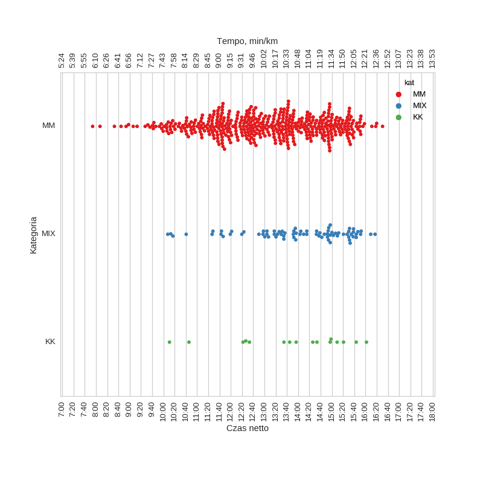

XI Bieg o Puchar Rzeźnika (2014)
Histogramy
Klasyfikacja generalna
| mean | std | min | 25% | 50% | 75% | max | |
|---|---|---|---|---|---|---|---|
| czas | 13:12:01 | 1:43:10 | 7:54:04 | 11:53:11 | 13:22:48 | 14:40:42 | 16:30:28 |
Wykresy rybkowe
wg kategorii

| czas | count | |||||||
|---|---|---|---|---|---|---|---|---|
| mean | std | min | 25% | 50% | 75% | max | ||
| kat | ||||||||
| KK | 13:47:55 | 1:43:17 | 10:10:56 | 12:31:46 | 14:11:24 | 15:01:25 | 16:01:46 | 16 |
| MIX | 14:00:47 | 1:30:01 | 10:07:54 | 13:09:56 | 14:12:45 | 15:09:14 | 16:17:04 | 78 |
| MM | 13:02:23 | 1:42:50 | 7:54:04 | 11:45:00 | 13:06:46 | 14:25:40 | 16:30:28 | 454 |
Menu
HistogramyWykresy rybkowe
∙ wg kategorii
Liczba uczestników: 548
Wygenerowano: 2016-03-27 12:40:28.311455